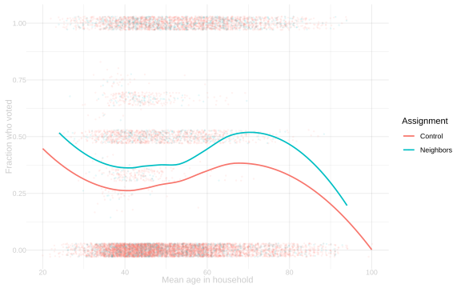
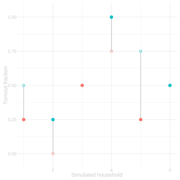
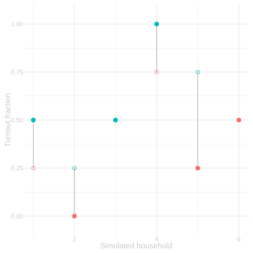
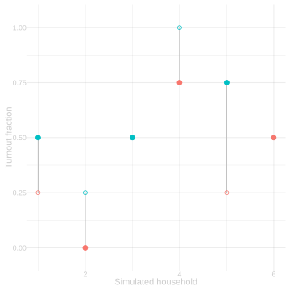

26 Potential Outcomes and Randomization
$$ \newcommand{X}{} \newcommand{Y}{}
$$
The Michigan Experiment
In 2006, Gerber, Green, and Larimer started with a list of registered-voter households in Michigan. They randomly assigned the households to a control group or to one of four letters. Eleven days before the primary, they mailed the assigned letters. Then they checked the public record to see who voted.
We will compare two of those groups:
- Control households received no letter.
- Neighbors households received a letter that displayed the household’s voting record and promised to report the household’s turnout to its neighbors.
The file contains real records from the experiment. Treatment was assigned by household, so one row in our analysis is one household. Its outcome is the fraction of listed household members who voted.
The observed difference in household turnout is \[ \hat\tau =\frac{1}{M_1}\sum_{j:W_j=1}Y_j -\frac{1}{M_0}\sum_{j:W_j=0}Y_j =0.085. \]
That is a comparison we can calculate. The causal question asks what the same households would have done under the other assignment.
Potential Outcomes
For household \(j\), define two fixed values:
- \(y_j(1)\) is the household turnout fraction if it receives the Neighbors letter.
- \(y_j(0)\) is the household turnout fraction if it receives no letter.
The household-level treatment effect is \[ \tau_j=y_j(1)-y_j(0). \] The average treatment effect among the households in these two arms is \[ \bar\tau=\frac1m\sum_{j=1}^m\tau_j =\frac1m\sum_{j=1}^m\{y_j(1)-y_j(0)\}. \]
The Fundamental Problem
Each household received one assignment. Therefore we observe one potential outcome: \[ Y_j=y_j(W_j). \] For a Neighbors household we observe \(y_j(1)\) but not \(y_j(0)\). For a control household we observe \(y_j(0)\) but not \(y_j(1)\). We do not observe \(\tau_j=y_j(1)-y_j(0)\) for any household.
This is the fundamental problem of causal inference. The pair \((y_j(0),y_j(1))\) defines the causal comparison, but the experiment reveals only one member of the pair.
A Small Simulated Population
The next six households are simulated solely to make the missing pairs visible.
| household | y0 | y1 | tau |
|---|---|---|---|
| 1 | 0.25 | 0.50 | 0.25 |
| 2 | 0.00 | 0.25 | 0.25 |
| 3 | 0.50 | 0.50 | 0.00 |
| 4 | 0.75 | 1.00 | 0.25 |
| 5 | 0.25 | 0.75 | 0.50 |
| 6 | 0.50 | 0.50 | 0.00 |
If we could see this complete table, we could calculate every treatment effect and their average. In an experiment we instead see either the y0 entry or the y1 entry in each row.
Why Randomization Works
Randomization does not reveal the missing potential outcome for any household. It makes the observed treatment and control groups comparable in expectation.
For the clean calculation, fix the numbers \(M_1\) and \(M_0\) assigned to the two arms, with \(M_1+M_0=m\). Randomly choose which \(M_1\) households receive the Neighbors letter. Conditional on the two-arm counts, this is the symmetry used by the GGL assignment: every household has probability \(M_1/m\) of being in the Neighbors arm and probability \(M_0/m\) of being in control.
The observed group means are \[ \hat\mu(w)=\frac1{M_w}\sum_{j=1}^m1_{=w}(W_j)Y_j. \] By the indicator trick, \[ 1_{=w}(W_j)Y_j=1_{=w}(W_j)y_j(w). \] Therefore \[ \begin{aligned} \mathop{\mathrm{E}}[\hat\mu(w)] &=\frac1{M_w}\sum_{j=1}^m y_j(w)\mathop{\mathrm{E}}[1_{=w}(W_j)]\\ &=\frac1{M_w}\sum_{j=1}^m y_j(w)\frac{M_w}{m}\\ &=\frac1m\sum_{j=1}^m y_j(w)=\bar\mu(w). \end{aligned} \] Linearity then implies \[ \mathop{\mathrm{E}}[\hat\tau] =\mathop{\mathrm{E}}[\hat\mu(1)-\hat\mu(0)] =\bar\mu(1)-\bar\mu(0) =\bar\tau. \]
The result is about repeated random assignment of the same fixed households and their same fixed potential outcomes. It is not a sampling argument.
Seeing Repeated Assignment
The next plot returns to the six-household simulated population. The connected dots are fixed potential-outcome pairs. Each panel changes only the assignment.



Different assignments reveal different halves of the same fixed pairs and produce different estimates. Across all assignments, the estimates center on \(\bar\tau\).
What This Establishes
- Potential outcomes define the causal question household by household.
- The real experiment reveals one potential outcome per household, never both.
- Random assignment makes the difference in observed group means unbiased for the average treatment effect across repeated assignments.
- The actual GGL estimate is calculated from real assignments and real turnout. The completed potential-outcome pairs used in the visualization are simulated.
- Sampling introduces a second source of randomness. That is the next chapter.